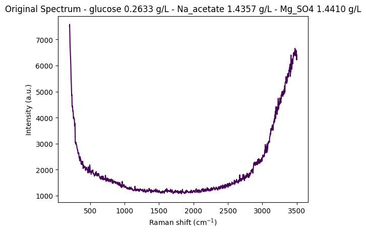
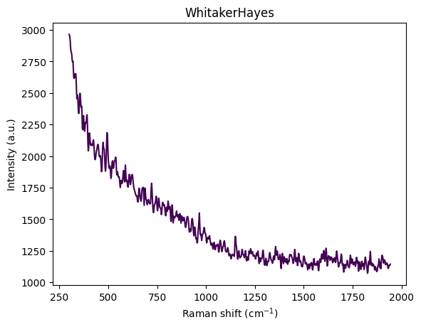
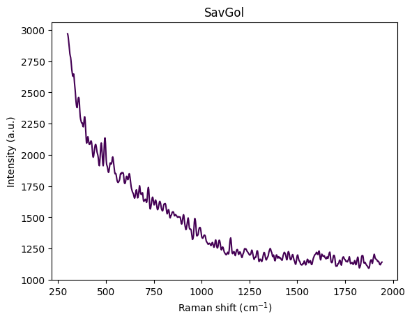
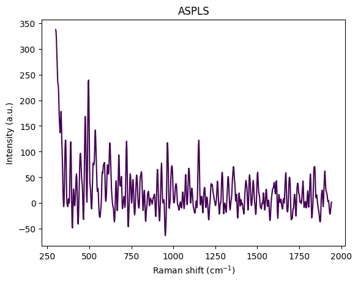
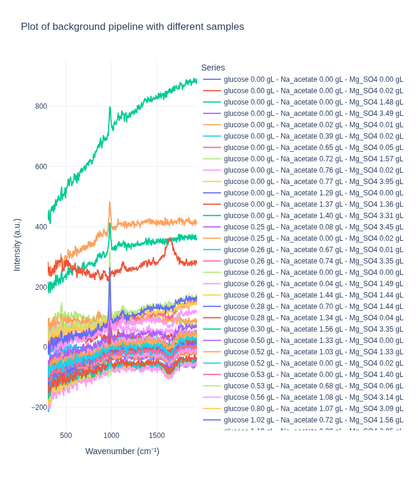
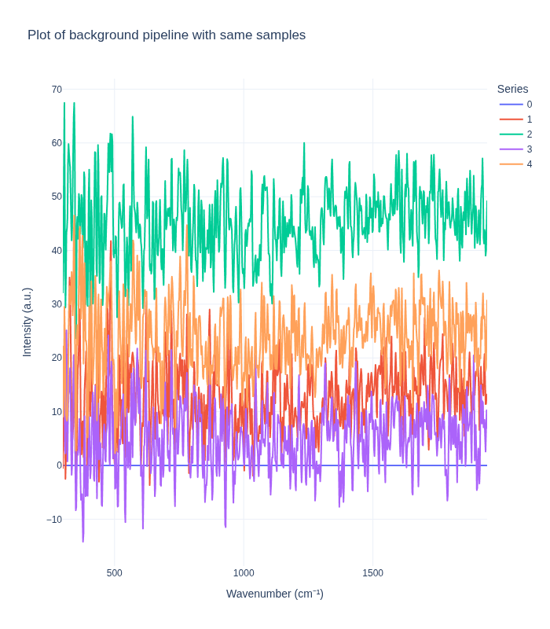

from pathlib import Path
from typing import Literal
import numpy as np
import pandas as pd
import plotly.express as px
import ramanspy as rp
import warnings
warnings.filterwarnings("ignore", category=SyntaxWarning)This notebook analyzes the dig-4-bio-raman transfer learning challenge dataset and demonstrates how to load and work with the multi-instrument Raman spectroscopy data.
In [17]:
In [18]:
"""
Define common paths and preprocessing pipelines.
This section sets up:
- Data directory path
- Standard preprocessing pipeline (without normalization)
- Cropping to fingerprint region (300-1942 cm⁻¹)
- Cosmic ray removal (Whitaker-Hayes)
- Denoising (Savitzky-Golay filter)
- Baseline correction (ASPLS)
Note: Normalization is commented out as it can destroy concentration information
for regression tasks.
"""
# Data directory path
data_path = Path("../data/dig-4-bio-raman-transfer-learning-challenge")
# Fingerprint region
MIN_WAVENUMBER = 300
MAX_WAVENUMBER = 1942
# Standard preprocessing pipeline without normalization
# This pipeline is suitable for regression tasks where we want to preserve
# concentration-related intensity information
standard_pipeline_without_normalisation = rp.preprocessing.Pipeline([
rp.preprocessing.misc.Cropper(region=(MIN_WAVENUMBER, MAX_WAVENUMBER)), # Fingerprint region
rp.preprocessing.despike.WhitakerHayes(), # Remove cosmic rays
rp.preprocessing.denoise.SavGol(window_length=9, polyorder=3), # Smooth noise
rp.preprocessing.baseline.ASPLS(), # Remove baseline drift
# rp.preprocessing.normalise.MinMax() # Excluded for regression tasks
])In [19]:
"""
Utility functions
"""
def find_spectral_columns(df: pd.DataFrame) -> tuple[list[str], list[str], np.ndarray]:
"""
Identifies spectral data columns by checking if the column name can be converted to a float.
This is a robust way to separate metadata from spectral data.
"""
spectral_cols = []
metadata_cols = []
for col in df.columns:
try:
float(col)
spectral_cols.append(col)
except (ValueError, TypeError):
metadata_cols.append(col)
wavenumbers = pd.to_numeric(spectral_cols)
return metadata_cols, spectral_cols, wavenumbers
def build_background_subtraction_pipeline(background: rp.Spectrum) -> rp.preprocessing.Pipeline:
"""
Builds a background subtraction pipeline with a specified region for cropping.
"""
background = rp.preprocessing.misc.Cropper(region=(MIN_WAVENUMBER, MAX_WAVENUMBER)).apply(background)
return rp.preprocessing.Pipeline([
rp.preprocessing.misc.Cropper(region=(MIN_WAVENUMBER, MAX_WAVENUMBER)),
rp.preprocessing.misc.BackgroundSubtractor(background=background)
])Dataset Description
This dataset contains Raman spectra from 8 different instruments measuring samples with known concentrations of three analytes:
- Glucose (g/L)
- Sodium Acetate (Na_acetate, g/L)
- Magnesium Sulfate (Mg_SO4, g/L)
The instruments included are: Anton 532, Anton 785, Kaiser, Metrohm, Mettler Toledo, Tec 5, Timegate, and Tornado.
Measurement Protocol:
- All samples were measured at room temperature with instrument-specific exposure times
- Most instruments acquired 5 replicate spectra per sample; Kaiser and Timegate recorded a single spectrum per sample
- Due to varying instrument availability, the sample sets differ across spectrometers
Instrument Characteristics: Each instrument exhibits unique properties that must be accounted for in analysis:
- Wavenumber ranges: Vary from ~200 to ~3500 cm⁻¹ across instruments
- Spectral resolution: Differs between instruments
Let’s start by loading data from one instrument (anton_532) to understand the data structure and visualize a sample spectrum.
In [20]:
"""
Load and visualize a sample spectrum from the anton_532 instrument.
This demonstrates:
1. Loading CSV data with spectral columns (wavenumbers) and metadata
2. Separating spectral data from metadata
3. Creating a RamanSPy SpectralContainer for analysis
4. Visualizing a raw spectrum with its concentration information
"""
# Load data from anton_532 instrument
df = pd.read_csv(data_path / "anton_532.csv").drop(columns=["MSM_present", "fold_idx"])
# Separate spectral columns (numeric column names = wavenumbers) from metadata
metadata_cols, spectral_cols, wavenumbers = find_spectral_columns(df)
# Create RamanSPy SpectralContainer for easier manipulation
spectral_container = rp.SpectralContainer(
spectral_data=df[spectral_cols].values,
spectral_axis=wavenumbers
)
# Select first spectrum for visualization
spectrum = spectral_container[0]
metadata = df[metadata_cols].iloc[0].to_dict()
# Create informative title with concentration information
title = (
f"Original Spectrum - "
f"glucose {metadata['glucose']:.4f} g/L - "
f"Na_acetate {metadata['Na_acetate']:.4f} g/L - "
f"Mg_SO4 {metadata['Mg_SO4']:.4f} g/L"
)
# Plot the spectrum
rp.plot.spectra(spectra=[spectrum], plot_type="single", title=title)
rp.plot.show()
Data Structure Overview
Let’s examine the structure of the loaded dataset to understand how the data is organized. The DataFrame contains:
- Metadata columns: Concentration values (glucose, Na_acetate, Mg_SO4) and other sample information
- Spectral columns: Numeric column names representing wavenumber values (cm⁻¹)
- Each row represents a single spectrum measurement with its associated concentration metadata
In [21]:
# Display the first few rows of the dataset
df.head(5)| 200.0 | 202.0 | 204.0 | 206.0 | 208.0 | 210.0 | 212.0 | 214.0 | 216.0 | 218.0 | ... | 3488.0 | 3490.0 | 3492.0 | 3494.0 | 3496.0 | 3498.0 | 3500.0 | glucose | Na_acetate | Mg_SO4 | |
|---|---|---|---|---|---|---|---|---|---|---|---|---|---|---|---|---|---|---|---|---|---|
| 0 | 7519.06 | 7582.15 | 7379.73 | 7054.04 | 6818.64 | 6684.24 | 6562.20 | 6398.03 | 6256.17 | 6135.72 | ... | 6539.65 | 6475.20 | 6573.45 | 6488.44 | 6284.99 | 6216.51 | 6409.21 | 0.26335 | 1.4357 | 1.44101 |
| 1 | 7414.24 | 7502.98 | 7327.93 | 7002.97 | 6760.01 | 6638.17 | 6539.84 | 6360.47 | 6200.67 | 6080.42 | ... | 6507.23 | 6451.34 | 6564.97 | 6465.79 | 6241.37 | 6171.89 | 6358.46 | 0.26335 | 1.4357 | 1.44101 |
| 2 | 7376.45 | 7474.90 | 7304.00 | 6961.46 | 6691.31 | 6557.30 | 6470.64 | 6309.66 | 6177.40 | 6090.05 | ... | 6501.41 | 6432.22 | 6521.16 | 6452.89 | 6248.68 | 6137.06 | 6318.74 | 0.26335 | 1.4357 | 1.44101 |
| 3 | 7383.60 | 7456.90 | 7264.59 | 6938.71 | 6707.66 | 6594.61 | 6493.20 | 6307.50 | 6144.74 | 6033.89 | ... | 6498.85 | 6412.12 | 6532.58 | 6459.36 | 6240.35 | 6146.15 | 6325.52 | 0.26335 | 1.4357 | 1.44101 |
| 4 | 7345.77 | 7435.40 | 7263.58 | 6929.82 | 6671.51 | 6544.19 | 6459.28 | 6302.71 | 6158.40 | 6043.02 | ... | 6506.29 | 6414.26 | 6530.51 | 6435.62 | 6214.08 | 6156.26 | 6348.95 | 0.26335 | 1.4357 | 1.44101 |
5 rows × 1654 columns
Step-by-Step Preprocessing Visualization
Preprocessing is crucial for Raman spectroscopy data analysis. Raw spectra contain:
- Baseline drift: Broad fluorescence background
- Cosmic rays: Sharp spikes from detector artifacts
- Noise: Random measurement noise
- Edge effects: Instrument-specific artifacts at spectral edges
This section visualizes how each preprocessing step transforms the spectrum, helping us understand the impact of each operation. We apply the following steps:
- Cropping: Remove edge artifacts and focus on fingerprint region (300-1942 cm⁻¹)
- Cosmic Ray Removal: Remove sharp spikes (Whitaker-Hayes algorithm)
- Denoising: Smooth the spectrum (Savitzky-Golay filter)
- Baseline Correction: Remove broad fluorescence background (ASPLS)
This visualization helps understand how each preprocessing step improves signal quality and prepares the data for analysis.
In [22]:
df = pd.read_csv(data_path / "anton_532.csv").drop( columns=["MSM_present", "fold_idx"])
metadata_cols, spectral_cols, wavenumbers = find_spectral_columns(df)
spectral_container = rp.SpectralContainer(
spectral_data=df[spectral_cols].values,
spectral_axis=wavenumbers
)
spectrum = spectral_container[0]
metadata = df[metadata_cols].iloc[0].to_dict()
title = f"Original Spectrum - glucose {metadata['glucose']:.4f} gL - Na_acetate {metadata['Na_acetate']:.4f} gL - Mg_SO4 {metadata['Mg_SO4']:.4f} gL"
rp.plot.spectra(spectra=[spectrum], plot_type="single", title=title)
rp.plot.show()
for step in standard_pipeline_without_normalisation:
spectrum = step.apply(spectrum)
title = f"{step.__class__.__name__}"
rp.plot.spectra([spectrum], plot_type="single", title=title)
rp.plot.show()




Understanding Spectral Cropping
From the visualization above, we can observe:
- Wavenumber range: Approximately 300–3600 cm⁻¹
- Strong baseline/fluorescence: Broad curvature from background fluorescence
- Edge artifacts:
- Below ~450 cm⁻¹: Edge effects, Rayleigh tail, optical artifacts
- Above ~3000 cm⁻¹: OH stretch from water dominates the signal
- Chemically informative region: The fingerprint region (400–1800 cm⁻¹) contains the most relevant information
The reference paper Comparing machine learning methods on Raman spectra from eight different spectrometers recommends:
- Crop to 300–1942 cm⁻¹: The largest common range across all 8 instruments
- Rationale:
- Preserves glucose, acetate, and MgSO₄ peaks
- Removes high-wavenumber water OH stretch
- Eliminates instrument-specific edge artifacts
- Improves cross-device robustness for transfer learning
For this dataset, cropping to 300–1942 cm⁻¹ is justified because:
- Glucose peaks: ~800–1150 cm⁻¹ ✓
- Acetate peak: ~920 cm⁻¹ ✓
- MgSO₄ strong peak: ~980 cm⁻¹ ✓
- Minimal water interference: Removes dominant OH stretch region
- Better signal-to-noise: Focuses on chemically informative region
This region contains the most relevant information for quantitative analysis while removing noise and artifacts.
Sample Structure and Organization
The dataset is organized around unique concentration triplets defined by the three analytes:
- Glucose (g/L)
- Sodium Acetate (Na_acetate, g/L)
- Magnesium Sulfate (Mg_SO4, g/L)
Replication Structure:
- Most instruments (Anton 532, Anton 785, Metrohm, Mettler Toledo, Tec 5, Tornado) recorded at least 5 replicate spectra per unique concentration triplet
- Kaiser and Timegate instruments recorded only 1 spectrum per concentration triplet (no replicates)
Sample Numbering: To facilitate analysis and visualization, we assign a unique sample_number to each distinct concentration triplet. This allows us to:
- Group spectra by their concentration profile
- Select representative spectra from each unique sample
- Track how preprocessing affects spectra from the same sample across different replicates
Exploring Concentration Distribution
Let’s examine the distribution of unique concentration triplets in the dataset. This helps us understand:
- How many unique samples (concentration combinations) are present
- The frequency of each concentration triplet
- The overall structure of the experimental design
In [23]:
df_metadata = df[metadata_cols]
df_metadata[["glucose", "Na_acetate", "Mg_SO4"]].value_counts()glucose Na_acetate Mg_SO4
0.00000 0.00000 0.000000 10
0.022899 5
1.483750 5
3.490220 5
0.01612 0.005016 5
0.38593 0.023827 5
0.65286 0.046091 5
0.71544 1.567450 5
0.75931 0.017697 5
0.76773 3.945410 5
1.29106 0.000000 5
1.37442 1.355800 5
1.39750 3.308900 5
0.24955 0.08245 3.454390 5
0.25369 0.00000 0.022609 5
0.25636 0.67294 0.005511 5
0.25649 0.74089 3.345560 5
0.25787 0.00000 0.000000 5
0.26229 0.03709 1.494600 5
0.26335 1.43570 1.441010 5
0.27710 0.69733 1.441180 5
0.28256 1.33788 0.035751 5
0.29784 1.56128 3.348590 5
0.49945 1.33009 0.003688 5
0.51645 1.02701 1.328620 5
0.52096 0.00000 0.015037 5
0.52616 0.00000 1.396560 5
0.53269 0.68172 0.056479 5
0.56078 1.07925 3.139890 5
0.79631 1.06674 3.090570 5
1.02342 0.71756 1.557450 5
1.18537 0.00000 2.948570 5
4.56573 0.69828 1.541520 5
4.62097 0.97254 0.014210 5
4.63261 0.69969 0.022235 5
4.73407 0.67310 0.003497 5
4.77883 0.00000 0.023272 5
4.78962 1.03913 1.497530 5
4.87666 0.72635 3.073870 5
4.91288 1.03532 3.302040 5
5.12832 0.02430 1.715070 5
5.24672 0.02440 3.361270 5
6.39311 0.00000 0.024451 5
10.16120 0.00000 1.477840 5
10.28120 0.66554 0.000000 5
10.35390 0.00000 0.000000 5
10.39640 0.68902 1.602520 5
10.59310 1.11418 3.484130 5
10.65220 0.00000 2.620210 5
10.66050 1.13599 1.624690 5
10.71080 0.74408 3.480790 5
10.74480 1.05836 0.005669 5
16.73440 0.00000 0.022216 5
Name: count, dtype: int64Assigning Sample Numbers
To facilitate analysis, we assign a unique sample_number to each distinct concentration triplet. This allows us to:
- Group all replicate spectra from the same sample together
- Easily select representative spectra for visualization
- Track samples across different preprocessing steps
After assignment, we sort the DataFrame by sample_number to organize the data for easier analysis.
In [24]:
df['sample_number'] = df.groupby(['glucose', 'Na_acetate', 'Mg_SO4']).ngroup()In [25]:
df = df.sort_values(by="sample_number")
df| 200.0 | 202.0 | 204.0 | 206.0 | 208.0 | 210.0 | 212.0 | 214.0 | 216.0 | 218.0 | ... | 3490.0 | 3492.0 | 3494.0 | 3496.0 | 3498.0 | 3500.0 | glucose | Na_acetate | Mg_SO4 | sample_number | |
|---|---|---|---|---|---|---|---|---|---|---|---|---|---|---|---|---|---|---|---|---|---|
| 48 | 7872.51 | 7949.13 | 7756.47 | 7430.07 | 7191.07 | 7054.33 | 6923.01 | 6728.96 | 6566.42 | 6446.71 | ... | 8358.85 | 8459.03 | 8365.43 | 8120.00 | 7994.58 | 8164.45 | 0.0000 | 0.0 | 0.000000 | 0 |
| 47 | 7855.57 | 7937.75 | 7754.15 | 7431.91 | 7196.21 | 7069.05 | 6947.50 | 6745.40 | 6582.47 | 6474.62 | ... | 8294.69 | 8415.91 | 8343.10 | 8109.79 | 7992.89 | 8171.26 | 0.0000 | 0.0 | 0.000000 | 0 |
| 46 | 7880.69 | 7968.58 | 7784.68 | 7442.57 | 7186.43 | 7063.44 | 6968.17 | 6777.16 | 6612.35 | 6503.68 | ... | 8341.36 | 8440.34 | 8340.85 | 8101.21 | 7993.53 | 8176.15 | 0.0000 | 0.0 | 0.000000 | 0 |
| 49 | 7816.74 | 7903.64 | 7718.65 | 7384.09 | 7142.29 | 7031.14 | 6940.11 | 6749.42 | 6575.63 | 6450.89 | ... | 8321.98 | 8416.93 | 8310.16 | 8071.10 | 7973.64 | 8140.15 | 0.0000 | 0.0 | 0.000000 | 0 |
| 45 | 7927.66 | 8014.66 | 7817.07 | 7476.43 | 7234.11 | 7111.39 | 6999.47 | 6808.78 | 6644.33 | 6525.25 | ... | 8359.07 | 8461.60 | 8376.35 | 8146.79 | 8041.58 | 8224.00 | 0.0000 | 0.0 | 0.000000 | 0 |
| ... | ... | ... | ... | ... | ... | ... | ... | ... | ... | ... | ... | ... | ... | ... | ... | ... | ... | ... | ... | ... | ... |
| 197 | 8207.04 | 8318.43 | 8149.32 | 7811.73 | 7548.74 | 7407.86 | 7296.73 | 7115.31 | 6970.95 | 6873.25 | ... | 9045.37 | 9158.60 | 9078.45 | 8841.36 | 8711.15 | 8854.53 | 16.7344 | 0.0 | 0.022216 | 52 |
| 196 | 8297.09 | 8374.05 | 8181.89 | 7849.53 | 7608.91 | 7486.01 | 7376.52 | 7186.54 | 7024.39 | 6912.22 | ... | 9154.26 | 9271.12 | 9179.31 | 8934.16 | 8822.59 | 8995.83 | 16.7344 | 0.0 | 0.022216 | 52 |
| 195 | 8478.47 | 8586.03 | 8417.81 | 8090.71 | 7841.44 | 7706.42 | 7591.60 | 7406.22 | 7241.26 | 7116.70 | ... | 9541.84 | 9634.93 | 9526.42 | 9289.84 | 9193.64 | 9367.68 | 16.7344 | 0.0 | 0.022216 | 52 |
| 198 | 8144.21 | 8233.26 | 8056.15 | 7729.10 | 7491.60 | 7380.43 | 7282.35 | 7076.46 | 6901.83 | 6794.68 | ... | 8967.69 | 9041.05 | 8962.62 | 8754.40 | 8638.11 | 8801.52 | 16.7344 | 0.0 | 0.022216 | 52 |
| 199 | 8084.45 | 8189.22 | 8040.56 | 7728.67 | 7486.21 | 7363.75 | 7264.74 | 7068.97 | 6883.15 | 6744.28 | ... | 8949.49 | 9057.16 | 8963.22 | 8726.82 | 8633.93 | 8811.21 | 16.7344 | 0.0 | 0.022216 | 52 |
270 rows × 1655 columns
Comparing Preprocessing Pipelines: Standard vs. Background Subtraction
This section visualizes the effects of different preprocessing pipelines on Raman spectra from various concentrations. We compare two preprocessing approaches:
- Standard Pipeline: Applies cropping, cosmic ray removal, denoising, and baseline correction
- Background Subtraction Pipeline: Crops the spectrum and subtracts a reference background spectrum
Key Objectives:
- Understand how different preprocessing methods affect spectral appearance
- Compare pipeline performance on spectra from different concentrations
- Assess pipeline behavior on replicate spectra from the same concentration
Expected Observations:
Background Subtraction Pipeline: When applied to spectra from different concentrations, this pipeline produces distinct spectral profiles that clearly differentiate between concentration levels. This demonstrates that the method effectively preserves concentration-dependent signal differences.
Standard Pipeline: In contrast, the standard pipeline tends to produce more similar-looking spectra across different concentrations, as it focuses on removing artifacts and noise while preserving the overall spectral shape. This can be beneficial for certain types of analysis but may reduce concentration-dependent signal differences.
Important Note: The background subtraction pipeline uses the first spectrum in the dataset as the reference background. For spectra from the same sample (same concentration), this is the first replicate. For spectra from different samples (different concentrations), this corresponds to the first sample in the dataset, which is the zero concentration sample.
In [26]:
# Note: Required for exporting static images in Quarto documents.
# (Comment out these lines to enable interactive Plotly plots in Jupyter or other interactive environments.)
import plotly.io as pio
pio.renderers.default = 'png'
def plot_spectra_interactive(
df: pd.DataFrame,
pipeline_type: Literal["standard", "background"] = "standard",
samples_type: Literal["same", "different"] = "same",
height: int = 800,
) -> None:
metadata_cols, spectral_cols, wavenumbers = find_spectral_columns(df)
spectral_container = rp.SpectralContainer(
spectral_data=df[spectral_cols].values,
spectral_axis=wavenumbers,
)
fig_title = f"Plot of {pipeline_type} pipeline with {samples_type} samples"
match pipeline_type:
case "standard":
spectra_list = standard_pipeline_without_normalisation.apply(spectral_container)
case "background":
spectra_list = build_background_subtraction_pipeline(background=spectral_container[0]).apply(spectral_container)
# Series labels
match samples_type:
case "same":
series_labels = list(range(len(df)))
case "different":
series_labels = df[["glucose", "Na_acetate", "Mg_SO4"]].apply(lambda x: f"glucose {x['glucose']:.2f} gL - Na_acetate {x['Na_acetate']:.2f} gL - Mg_SO4 {x['Mg_SO4']:.2f} gL", axis=1).tolist()
all_spectra_dfs = []
for i, spectrum in enumerate(spectra_list):
temp_df = pd.DataFrame({
'Wavenumber': spectrum.spectral_axis,
'Intensity': spectrum.spectral_data
})
temp_df['Series'] = series_labels[i]
all_spectra_dfs.append(temp_df)
# Combine all the small DataFrames into one large, tidy DataFrame
plot_df = pd.concat(all_spectra_dfs, ignore_index=True)
# Create the interactive plot
fig = px.line(
plot_df,
x='Wavenumber',
y='Intensity',
color='Series', # Each series gets a different color line
title=fig_title,
labels={ # Custom labels for axes
"Wavenumber": "Wavenumber (cm⁻¹)",
"Intensity": "Intensity (a.u.)"
},
template='plotly_white', # A clean template with grids
height=height,
)
# Update subplot titles to be cleaner (optional)
# fig.for_each_annotation(lambda a: a.update(text=a.text.split("=")[1]))
# Display the figure in the Jupyter Notebook
fig.show()Comparing Pipelines on Different Concentrations
We first examine how each preprocessing pipeline handles spectra from different concentration levels. This helps us understand:
- How well each pipeline preserves concentration-dependent spectral features
- The ability to distinguish between different analyte concentrations
- The impact of preprocessing on quantitative signal information
We select one representative spectrum from each unique concentration triplet to compare the pipelines on distinct samples.
In [27]:
different_samples_df = (
df.groupby("sample_number", as_index=False)
.nth(0)
)
different_samples_df.head(5)| 200.0 | 202.0 | 204.0 | 206.0 | 208.0 | 210.0 | 212.0 | 214.0 | 216.0 | 218.0 | ... | 3490.0 | 3492.0 | 3494.0 | 3496.0 | 3498.0 | 3500.0 | glucose | Na_acetate | Mg_SO4 | sample_number | |
|---|---|---|---|---|---|---|---|---|---|---|---|---|---|---|---|---|---|---|---|---|---|
| 48 | 7872.51 | 7949.13 | 7756.47 | 7430.07 | 7191.07 | 7054.33 | 6923.01 | 6728.96 | 6566.42 | 6446.71 | ... | 8358.85 | 8459.03 | 8365.43 | 8120.00 | 7994.58 | 8164.45 | 0.0 | 0.00000 | 0.000000 | 0 |
| 27 | 7867.47 | 7945.25 | 7751.45 | 7424.17 | 7188.73 | 7061.26 | 6942.80 | 6761.27 | 6611.74 | 6500.41 | ... | 8623.98 | 8714.13 | 8628.46 | 8391.91 | 8265.12 | 8434.56 | 0.0 | 0.00000 | 0.022899 | 1 |
| 207 | 7342.39 | 7399.16 | 7207.68 | 6881.40 | 6641.70 | 6524.32 | 6434.70 | 6271.56 | 6124.36 | 6011.24 | ... | 7215.12 | 7326.84 | 7226.49 | 6984.68 | 6873.00 | 7048.59 | 0.0 | 0.00000 | 1.483750 | 2 |
| 84 | 7405.46 | 7469.17 | 7290.53 | 6987.57 | 6773.68 | 6670.61 | 6572.76 | 6380.83 | 6213.01 | 6102.20 | ... | 7914.66 | 8002.84 | 7926.06 | 7731.41 | 7653.32 | 7804.36 | 0.0 | 0.00000 | 3.490220 | 3 |
| 190 | 7344.06 | 7410.08 | 7226.07 | 6909.59 | 6673.01 | 6540.97 | 6424.29 | 6245.51 | 6085.45 | 5962.36 | ... | 6989.71 | 7082.35 | 6989.41 | 6777.86 | 6697.66 | 6873.22 | 0.0 | 0.01612 | 0.005016 | 4 |
5 rows × 1655 columns
In [28]:
plot_spectra_interactive(df=different_samples_df, pipeline_type="standard", samples_type="different")
In [29]:
plot_spectra_interactive(df=different_samples_df, pipeline_type="background", samples_type="different")
Comparing Pipelines on Replicate Spectra
Next, we examine how each preprocessing pipeline handles replicate spectra from the same concentration. This analysis reveals:
- Measurement reproducibility: How consistent are replicate measurements after preprocessing?
- Noise characteristics: What residual variability remains after preprocessing?
- Pipeline stability: How do different preprocessing methods affect replicate consistency?
We randomly select one sample (concentration triplet) and visualize all its replicate spectra to assess within-sample variability.
In [30]:
# Draw a random sample number
unique_sample_numbers = df["sample_number"].unique()
random_sample_number = np.random.choice(unique_sample_numbers)
same_samples_df = df[df["sample_number"] == random_sample_number]
same_samples_df| 200.0 | 202.0 | 204.0 | 206.0 | 208.0 | 210.0 | 212.0 | 214.0 | 216.0 | 218.0 | ... | 3490.0 | 3492.0 | 3494.0 | 3496.0 | 3498.0 | 3500.0 | glucose | Na_acetate | Mg_SO4 | sample_number | |
|---|---|---|---|---|---|---|---|---|---|---|---|---|---|---|---|---|---|---|---|---|---|
| 39 | 7320.48 | 7419.34 | 7262.94 | 6932.90 | 6659.87 | 6511.08 | 6412.69 | 6254.91 | 6114.20 | 6003.54 | ... | 6505.33 | 6628.53 | 6562.14 | 6346.97 | 6249.52 | 6424.52 | 0.26229 | 0.03709 | 1.4946 | 18 |
| 37 | 7406.77 | 7464.21 | 7264.81 | 6934.42 | 6697.93 | 6580.23 | 6468.39 | 6254.99 | 6088.88 | 6006.50 | ... | 6514.41 | 6650.11 | 6582.10 | 6355.25 | 6250.23 | 6432.15 | 0.26229 | 0.03709 | 1.4946 | 18 |
| 35 | 7400.97 | 7517.01 | 7365.01 | 7025.82 | 6752.42 | 6622.32 | 6541.35 | 6361.16 | 6198.60 | 6089.23 | ... | 6604.90 | 6699.57 | 6597.09 | 6374.15 | 6294.01 | 6489.00 | 0.26229 | 0.03709 | 1.4946 | 18 |
| 38 | 7331.09 | 7410.65 | 7238.04 | 6920.44 | 6677.50 | 6547.06 | 6443.18 | 6276.78 | 6130.41 | 6014.91 | ... | 6526.00 | 6659.57 | 6572.41 | 6339.60 | 6255.41 | 6434.59 | 0.26229 | 0.03709 | 1.4946 | 18 |
| 36 | 7386.98 | 7465.57 | 7288.87 | 6969.29 | 6732.37 | 6613.17 | 6507.77 | 6306.82 | 6140.97 | 6039.23 | ... | 6593.39 | 6661.59 | 6571.50 | 6375.59 | 6293.98 | 6460.65 | 0.26229 | 0.03709 | 1.4946 | 18 |
5 rows × 1655 columns
In [31]:
plot_spectra_interactive(df=same_samples_df, pipeline_type="standard", samples_type="same")
In [32]:
plot_spectra_interactive(df=same_samples_df, pipeline_type="background", samples_type="same")
Understanding Measurement Variability
The visualization above reveals important insights about measurement variability:
Key Observations:
- Intrinsic Experimental Variability: Even with identical sample concentrations, replicate spectra show some variation. This reflects:
- Natural measurement noise inherent in Raman spectroscopy
- Slight variations in sample positioning or laser focus
- Instrument-specific measurement characteristics
- Environmental factors (temperature, humidity, etc.)
- Pipeline Impact on Variability:
- The standard pipeline typically reduces variability by removing noise and artifacts, making replicates appear more similar
- The background subtraction pipeline may preserve or even amplify certain types of variability, depending on the reference background used
- Implications for Analysis:
- Understanding this variability is crucial for setting appropriate model expectations
- The residual variability after preprocessing represents the lower bound of prediction uncertainty
- This information helps in designing robust models that can handle real-world measurement conditions
This variability analysis is essential for developing reliable quantitative models that can generalize to new measurements.